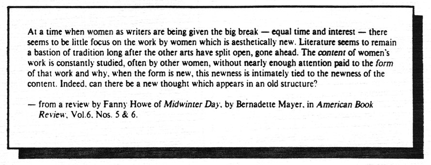

.endnotesEditor's Note:
The complete text of Maureen Owen's long poem,
Amelia Earheart,
excerpted in the Vol. 1, No. 2 issue of HOW(ever), has been published by Vortex Editions and can be ordered from Small Press Traffic, 3841 B 24th St., San Francisco, CA 94114. for $5, plus 75¢ for postage and handling. Rachel Blau DuPlessis's new chapbook, Gypsy Moth,
from her longer work
The History of Poetry,
has just been published by The Coincidence Press, and can be ordered from 402 Grand Ave., #9, Oakland, CA 94610, for $3. The book
Feminist Poetics, A Consideration of the Female Construction of Language (
Edited with an Introduction by Kathleen Fraser; Assoc. Editor, Judy Frankel) is available in a limited edition from: Fraser, 554 Jersey St., San Francisco, CA 94114, for $8 per copy. This book is a resource for teachers in Creative Writing and Women's Studies literature courses, and documents a course taught in 1982, at S.F. State, including original creative and scholarly work presented by guest critics Carolyn Burke, Rachel Blau DuPlessis and Frances Jaffer; essays on Stein, Richardson, WooIf, H.D., Fanny Howe and Ntozake Shange; a section of 19 contemporary women poets, their bibliographies and poems, as well as original works from members of the class. The emphasis is on American modernist women poets who introduced structural innovations into the literature.
HOW(ever) is available in a second series of four numbers beginning with this issue. Subscriptions for Volume 2 cost $6 for individuals, $8 for institutions and libraries. Single copies are not for sale, except on a limited local basis, nor are free sample copies available. Your subscription and support is invited. Subscription checks should go to: HOW(ever), c/o Jaffer, 871 Corbett, San Francisco, CA 94131. Original poetry manuscripts, informal commentary on neglected modernist women writers, postcards alerting us to current or lost works of poetry will be seriously considered. All editorial correspondence should be sent to: Fraser, 554 Jersey St., San Francisco, CA 94114. an INTERSECTION sponsored project  go to this issue's table of contents
|